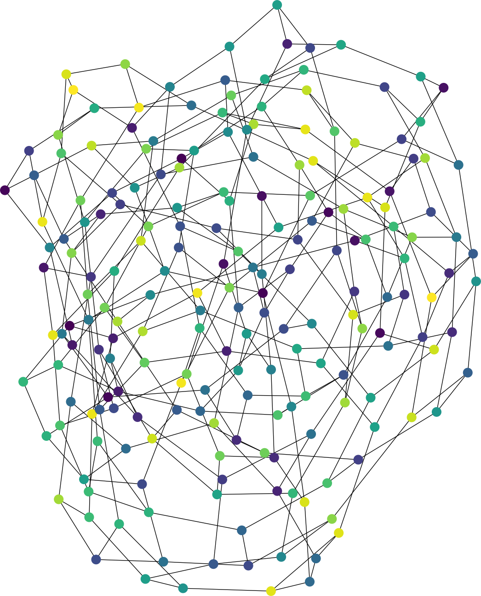
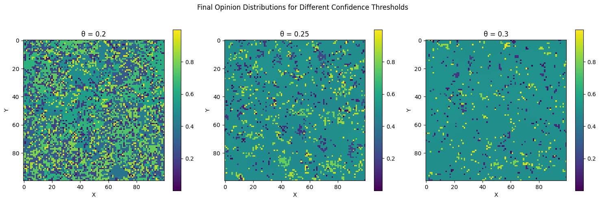
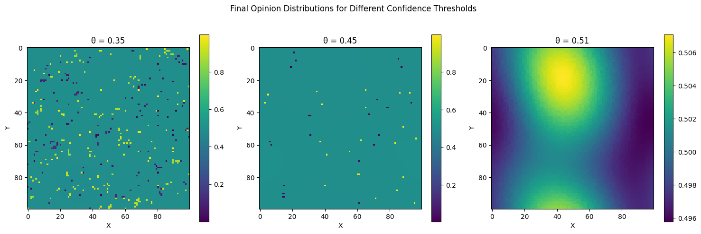

Dokonamy przeglądu zagadnień poruszanych w trakcie wykładu i zarysujemy jego wstępny plan. Wymagania wstępne oraz wykaz literatury znajduje się na końcu rozdziału.

Celem wykładu jest dokonanie przeglądu kilku modeli układów cząstek lub osobników, które wzajemnie na siebie oddziałują. Każda cząsteczka lub osobnik \(x\) posiada w czasie \(t\geq 0\) pewną cechę oznaczaną \(\eta_t(x)\). W poruszanych przykładach \(\eta_t(x)\) będzie opinią w chwili \(t\) agenta \(x\) na z góry zadany temat. Może być to odpowiedź na pytanie Jaką procentowo podwyżkę powinni otrzymać nauczyciele akademiccy? Wówczas \(\eta_t(x)\) jest liczbą w przedziale \([0,1]\). Nieco prostsza jest odpowiedź na Jak zagłosujesz w najbliższym referendum? Wtedy \(\eta_t(x)\) może być interpretowane jako liczba \(\{0,1\}\). Te i kilka innych przykładów omówimy w niniejszym rozdziale. Ich cechą wspólną jest to, że w naturalny sposób cecha jednego osobnika, poprzez interakcje, wpływa na cechy pozostałych. W skutek czego będziemy patrzyli na takie systemy globalnie.
Kolekcją osobników będzie każdorazowo zbiór wierzchołków przeliczalnego grafu nieskierowanego o ograniczonym stopniu \(G=(V, E)\). Wówczas występowanie krawędzi możemy zinterpretować jako znajomość. Niech \(W \subseteq \mathbb{R}\) będzie ograniczony i domknięty (w ogólności \(W\) może być dowolną zwartą przestrzenią metryczną). Dla \(t \geq 0\) i \(x \in V\) rozważać będziemy losowy wybór cech \(\eta_t(x) \in W\). W trakcie wykładu interesować nas będzie asymptotyczne zachowanie \(\eta_t = \{ \eta_t(x) \}_{x \in V}\) dla dużych wartości \(t\).
Przejdziemy teraz do przeglądu konkretnych modeli badanych w trakcie wykładu.
 
Niech \(G = (V, E)\) będzie grafem, który może być skończony lub nieskończony o ograniczonym stopniu. Model Deffuanta na \(G\) z parametrami \(\mu \in \left(0, 1/2\right]\) i \(\theta \in (0, 1)\) jest zdefiniowany w następujący sposób. W momencie \(t = 0\) wartości \(\eta_0=\{ \eta_0(x)\}_{x \in V}\) są niezależnie o rozkładzie jednostajnym na \([0, 1]\). Każda krawędź \(e \in E\) jest wyposażona w niezależny proces Poissona o jednostkowej intensywności. Następnie proces \(\eta_t=\{\eta_t(x)\}_{x \in V}\) zmienia się według następującej reguły. Dla każdego \(v \in V\) Wartość \(\eta_t(v)\) pozostaje niezmieniona dopóki nie nastąpi zdarzenie Poissona dla którejkolwiek z krawędzi o końcu w \(v\). Gdy w pewnym losowym momencie \(\tau\) zegar Poissona zadzwoni na krawędzi \(e = \{u, v\}\) to dla \(\eta_{\tau-}(u) = a\) (co oznacza \(\lim_{s \uparrow \tau} \eta_s(u) = a\)) i \(\eta_{\tau-}(v) = b\), kładziemy \[\eta_\tau(u) = \begin{cases} a + \mu(b - a) & \text{jeśli } |a - b| \leq \theta, \\ a & \text{w przeciwnym razie}, \end{cases}\] oraz \[\eta_\tau(v) = \begin{cases} b + \mu(a - b) & \text{jeśli } |a - b| \leq \theta, \\ b & \text{w przeciwnym razie}. \end{cases}\] Można to uznać za model formowania konsensusu w społeczności. Każdy wierzchołek \(v \in V\) reprezentuje jednostkę, a \(\eta_t(v)\) jej przekonanie lub opinię na jakiś temat. Dynamika zdefiniowana powyżej jest uproszczonym modelem następującego zjawiska. Załóżmy, że wierzę, iż wszechświat ma \(13,5 \times 10^9\) lat, i spotykam Alicję, która uważa, że wszechświat ma \(13,0 \times 10^9\) lat. Jej oszacowanie wydaje się być rozsądne, a ona myśli to samo o moim. Powoduje to, że dostosowuję moje szacowanie do \(13,4 \times 10^9\) lat, podczas gdy ona podnosi swoje do \(13,1 \times 10^9\) lat. Jeśli natomiast spotykam Sarę, która uważa, że wszechświat ma zaledwie \(6000\) lat, to wnioskuję, że jest szalona, co ona również uważa o mnie, więc żadne z nas nie znajduje powodu, aby dostosować swoje oszacowania. Ogólnie rzecz biorąc, jesteśmy skłonni brać opinie innych osób na poważnie tylko wtedy, gdy mieszczą się one w pewnym określonym zakresie \(\theta\) naszych własnych.
Naturalnym zagadnieniem w tym kontekście jest konsensus. Czy istnieją krawędzie \(\{x, y\} \in E\) takie, że \[\liminf_{t \to \infty} | \eta_t(x) - \eta_t(y)| \geq \theta.\] W przypadku nieskończonych grafów pełna odpowiedź jest znana tylko dla \(G = \mathbb{Z}\). Dla grafów skończonych znane oszacowania są dalekie od optymalnych. Symulacje wskazują, że konsensus ma miejsce, gdy \(\theta>1/2\).
Model głosowania został wprowadzony niezależnie przez Clifforda i Sudbury’ego (1973) oraz Holley’a i Liggetta (1975). Tutaj przestrzeń stanów to \(\{0, 1\}\), a mechanizm ewolucji jest opisany w następujący sposób: \(\eta_t(x)\) zmienia się na \(1 - \eta_t(x)\) z intensywnością \[\frac{1}{\deg(x)} \sum_{y \sim x} \mathbb{1}_{\{\eta_t(y) = 1 - \eta_t(x)\}},\] gdzie \(\deg(x)\) oznacza stopień wierzchołka \(x\), \(\sum_{y \sim x}\) oznacza sumę po wszystkich sąsiadach \(x\).
W interpretacji modelu głosowania przez Holley’a i Liggetta, wierzchołki w \(G\) reprezentują wyborców, którzy mogą mieć jedno z dwóch stanowisk politycznych, oznaczanych przez zero i jeden. Wyborca czeka losowy czas wykładniczy o parametrze jeden, a następnie przyjmuje stanowisko losowo wybranego sąsiada. Clifford i Sudbury interpretują proces jako inwazję. \(\{x \in G : \eta(x) = 0\}\) i \(\{x \in G : \eta(x) = 1\}\) reprezentują terytorium zajmowane przez dwie rywalizujące populacje. Miejsce jest atakowane z intensywnością proporcjonalną do liczby sąsiednich miejsc kontrolowanych przez przeciwną populację.
Proces ten został wprowadzony po raz pierwszy przez Harrisa (1974). Dynamika jest określona przez następujące częstości przejść: w wierzchołku \(x\), \[1 \rightarrow 0 \text{ z intensywnością } 1,\] oraz \[0 \rightarrow 1 \text{ z intensywnością } \lambda \sum_{y : |y - x| = 1} \eta(y),\] gdzie \(\lambda\) jest dodatnim parametrem, który interpretowany jest jako częstość intensywność. Miejsca, w których \(\eta(x) = 1\), są uznawane za zainfekowane, podczas gdy miejsca, w których \(\eta(x) = 0\), są uznawane za zdrowe. Zainfekowani osobnicy stają się zdrowi po czasie wykładniczym z parametrem jeden, niezależnie od konfiguracji. Zdrowi osobnicy zostają zainfekowani z częstością proporcjonalną do liczby zainfekowanych sąsiadów.
Jest to model magnetyzmu, który został wprowadzony przez Glaubera (1963) i następnie po raz pierwszy zbadany w ogólności przez Dobrushina (1971). Jest to proces z przestrzenią stanów \(\{-1, +1\}\). Wierzchołki reprezentują atomy żelaza, które są rozmieszczone na \(G\). Wartość \(\pm 1\) w wierzchołku reprezentuje spin atomu w tym wierzchołku. Dynamika jest określona przez wymóg, że spin \(\eta(x)\) w \(x \in G\) zmienia się na \(-\eta(x)\) z intensywnością \[\exp \left( -\beta \sum_{y : |y - x| = 1} \eta(y) \right),\] gdzie \(\beta=1/T\) jest nieujemnym parametrem, który reprezentuje odwrotność temperatury układu. Należy zauważyć, że częstość zmiany spinu jest wyższa, gdy spin w \(x\) różni się od większości jego sąsiadów, niż gdy jest zgodny z większością sąsiadów. Zatem układ preferuje konfiguracje, w których spiny są skoordynowane. Im większy parametr \(\beta=1/T\) tym mocniejsza jest to preferencja.
We wszystkich przedstawionych powyżej przykładach \((\eta_t)_{t \geq 0}\) jest procesem Markowa z przestrzenią stanów \(W^V\), gdzie \(W\) jest przestrzenią cech, a \(V\) zbiorem wierzchołków rozważanego grafu. Z tego powodu początek wykładu poświęcimy na omówienie podstaw procesów Markowa. Z tego powodu od słuchaczy będzie wymagana znajomość teorii łańcuchów Markowa na poziomie kursu z teorii prawdopodobieństwa 2r. Zważywszy na charakter opisu powyższych procesów większość analizy przeprowadzimy w oparciu o pojęcia półgrupy i generatora. Przydatna do tego (chociaż nie niezbędna) będzie znajomość podstaw analizy funkcjonalnej. Następnie przejdziemy do dokładnego przeglądu wyżej wspomnianych modeli.
Podstawowa literatura do wykładu:
Liggett, Thomas Milton. Continuous time Markov processes: an introduction. Vol. 113. American Mathematical Soc., 2010.
Liggett, Thomas Milton, and Thomas M. Liggett. Interacting particle systems. Vol. 2. New York: Springer, 1985.
Liggett, Thomas M. Stochastic interacting systems: contact, voter and exclusion processes. Vol. 324. springer science & Business Media, 2013.
Wrocław, czerwiec 2024 Piotr Dyszewski